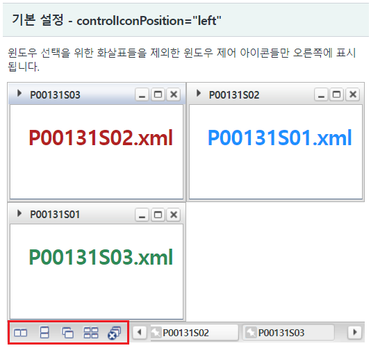
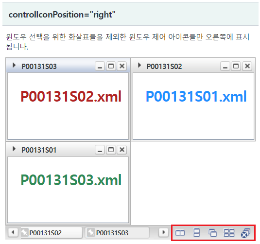
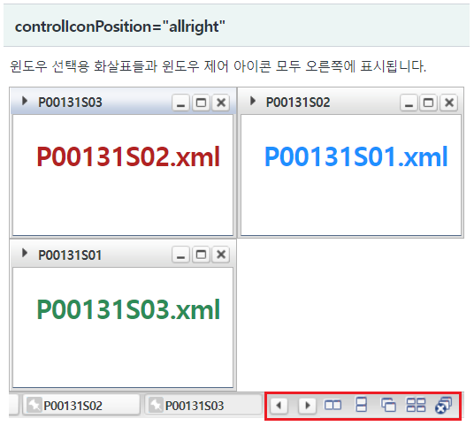
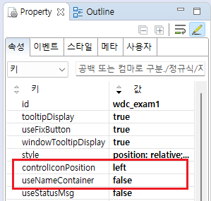
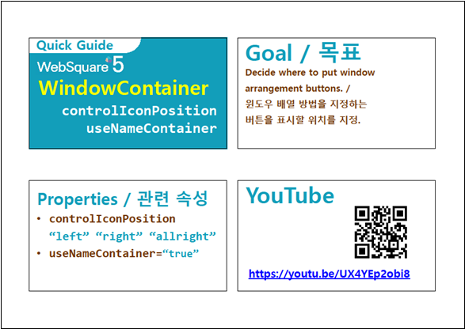

WindowContainer의 속성 중 "controlIconPosition" 설정의 예제입니다. 속성 "nameLayerRearrange"는 윈도우 제어 아이콘의 위치를 지정하는 기능을 제공합니다.
기본 설정 - controlIconPosition="left"
controlIconPosition="right"
controlIconPosition="allright"
윈도우 제어 아이콘 영역이 왼쪽에 위치합니다.
[브라우저(Chrome) 실행 예시]

윈도우 제어 아이콘 영역이 오른쪽에 위치합니다.
[브라우저(Chrome) 실행 예시]

윈도우 선택용 화살표들과 윈도우 제어 아이콘 모두 오른쪽에 위치합니다.
[브라우저(Chrome) 실행 예시]

WindowContainer의 속성을 정의합니다.
[필수] controlIconPosition="left" //[default:left, right, allright] windowContainer 제어 아이콘의 위치. useNameContainer="true"인 경우 동작.
"left" : 윈도우 선택을 위한 화살표들을 제외한 윈도우 제어 아이콘들만 왼쪽에 표시.
"right" : 윈도우 선택을 위한 화살표들을 제외한 윈도우 제어 아이콘들만 오른쪽에 표시.
"allright" : 윈도우 선택용 화살표들과 윈도우 제어 아이콘 모두 오른쪽에 표시.
[필수] useNameContainer="true" //[default:false, true] 속성 controlIconPosition을 사용하기 위해 필수 지정
그림 1.웹스퀘어5 SP5 스튜디오의 Property View(속성창) 예시

[소스 코드 예시]
<!-- windowContainer 의 소스 본문 예시 --> <w2:windowContainer controlIconPosition="left" useNameContainer="true"> <!-- 중략 --> </w2:windowContainer>
controlIconPosition
useNameContainer
[웹스퀘어5 SP5 개발 가이드] WindowContainer
링크 : https://docs1.inswave.com/sp5_user_guide/2059d4ce88b2fc16#c65cb349eb266637
[웹스퀘어5 SP5 개발 가이드] WindowContainer - 정렬 아이콘 위치 설정 (controlIconPosition)
링크 : https://docs1.inswave.com/sp5_user_guide/2059d4ce88b2fc16#9fd2ddb2af0918a8
WindowContainer - 정렬 아이콘 위치 설정 (controlIconPosition)
링크 : https://youtu.be/UX4YEp2obi8
